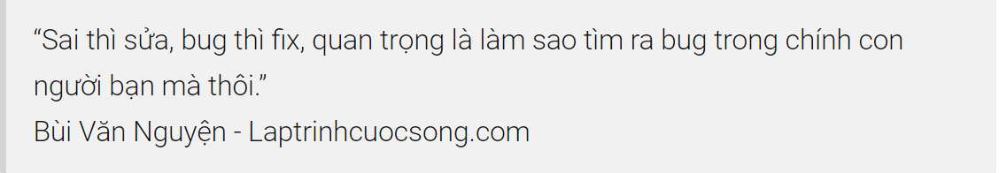

Trước hết xin được cảm ơn bạn vì đã xem trang này, mình là Bùi Văn Nguyện, tác giả của blog Lập Trình Cuộc Sống. Mình viết blog này với mục đích chia sẻ những kinh nghiệm mình học được khi làm việc trong ngành lập trình.
Cái tên Lập Trình Cuộc Sống xuất phát từ một câu danh ngôn mà mình rất thích của Les Brown: “Nếu bạn không tự lập trình chính mình, cuộc sống sẽ lập trình bạn”. Blog này là nơi mình với các bạn có cùng đam mê chia sẻ, tự lập trình chính mình không chỉ trong nghề nghiệp mà còn cả trong cuộc sống.
Vì là blog Lập trình cuộc sống, cộng thêm tính tình vui vẻ nên blog này không quá nặng về yếu tố kỹ thuật, chủ yếu là chia sẻ về kỹ năng lập trình, kỹ năng cuộc sống. Nếu có viết về kỹ thuật cũng là các kiến thức dễ hiểu, dưới góc nhìn thú vị mà ai cũng có thể dễ dàng tiếp cận được.
Sau khi bỏ đại học ở một trường không mấy danh tiếng, mình bắt đầu làm freelance thiết kế web từ năm 2010 đến 2014, sau đó mình rời Sài Gòn về quê làm vài công việc chân tay (làm xưởng cao su, phục vụ nhà hàng) để học kế toán với mong muốn làm nhà nước, sáng cắp cặp đi tối cắp cặp về.
Năm 2015, mình bỏ tất cả xách ba lô ra Hà Nội tiếp tục theo đuổi lại đam mê lập trình, quay trở lại nghiệp code, từ đó đến nay bôn ba code dạo, hiện tại mình đang lead một cái team nhỏ nhỏ, trong một công ty nhỏ nhỏ, cũng khá enjoy với công việc của mình.